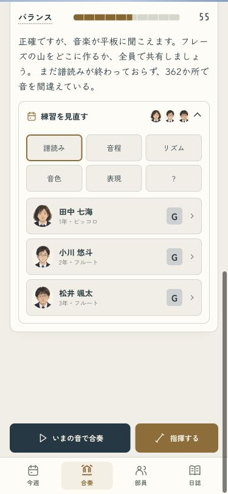
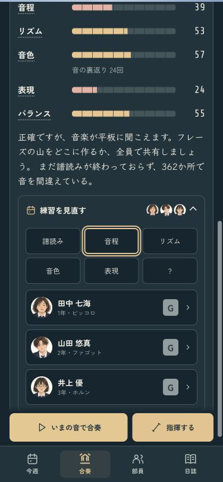
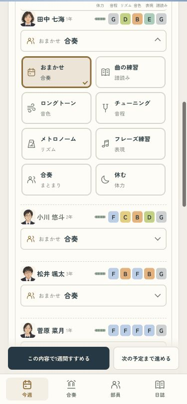
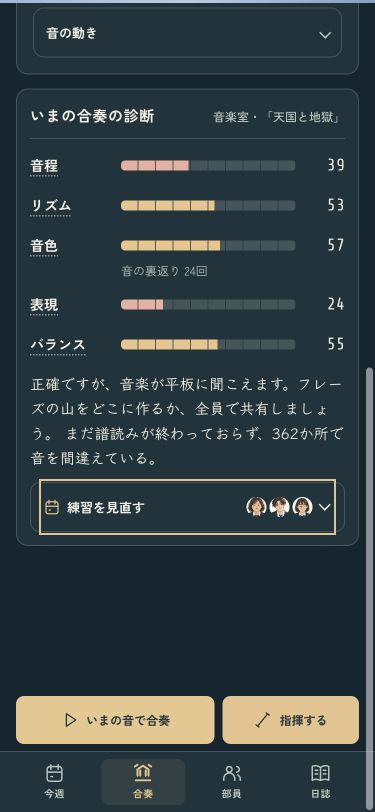
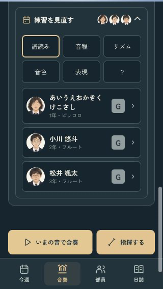
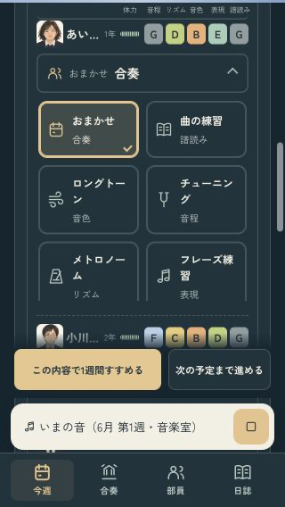

診断から、その子の練習へ
診断の下で、譜読み・音程・リズム・音色・表現を切り替え。顔を押すと本人の練習へ進み、選んだら元の顔へ戻ります。見るだけでは指示を変えません。
診断から練習を選んでみる · 確認記録 · 変更と確認の詳細
譜読みから選ぶ・ライト
音程も、顔で見直す・ダーク
顔から本人の練習へ
普段は見出しだけ
課題曲・小さい画面・長い名前
課題曲は、その曲の譜読みで320px・12文字の名前
再生中もメニューを操作できる
確認ページは本物のセーブと設定を変更しません。初年度を翌年4月まで進めて、エラーなし。iPhone向けビルド成功。実機に接続できず、最終版の入れ直しと実機での表示確認は未完了です。
前の改善：席を、すぐ選べるように